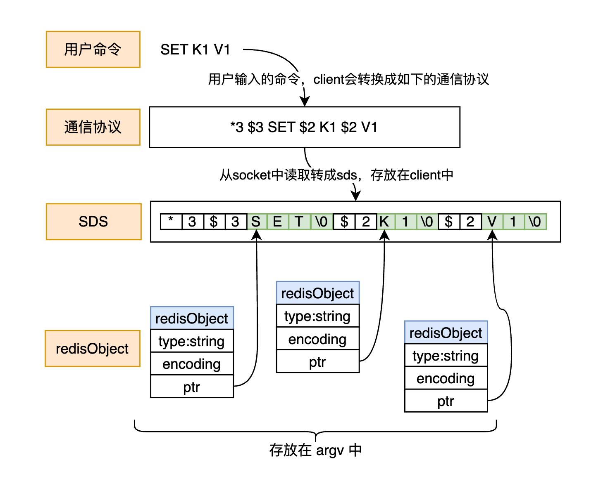

Redis源码分析之请求的处理流程
Redis拿到用户的指令之后，是怎么开始处理的
前置知识点
知识点1、Redis的通信协议：http://doc.redisfans.com/topic/protocol.html
知识点2、当有Client连接Redis的时候，Redis会对这个Client创建一个Client对象保存在内存中，而这个Client对象在底层就是Socket
知识点3、Socket在Linux底层就是一个文件描述符
整体流程
1、用户发送命令：通过Client发送一个Redis指令，就是向这个Scoket这个文件描述符写入数据
2、Redis执行命令：就是检查该Socket对应的文件描述符上是否有数据可读，如果有，则会从该文件描述符上读取 Redis 命令请求数据。然后开始执行命令。
3、Client接收响应：当 Redis执行完成之后，会将执行结果写入Socket所在的文件描述符，Client同样的，会读取该Socket上的数据，将其解析并显示给用户。
这里我们只看Redis是如何执行命令的，就是第2步的具体源码实现。
主要方法
//Redis接收并请求处理：从Socket中读取到命令的字节数组; 将命令转换成Redis的数据类型; 执行命令
//Redis5.X和Redis6.X的这个方法入参不一样了。因为6.X引入了IO线程
void readQueryFromClient(aeEventLoop *el, int fd, void *privdata, int mask) {
//请求处理-读取Socket-1：从网卡中读取的是字节数组，对于Redis来说都要转换成sds（为什么？因为用户输入的命令一定是字符串的，而Redis中String类型的底层实现就是sds），这里引入了sds；
qblen = sdslen(c->querybuf);
/*请求处理-读取Socket-8：这里开始真正的读取
* fd：表示要读取的Socket对应的文件描述符
* c->querybuf+qblen：表示输入缓冲区中（client中的：sds querybuf）数据存储的起始位置
* eadlen：表示读多少，默认是1024x16（如果一次读不完，就分多次读）*/
nread = read(fd, c->querybuf+qblen, readlen);
if (nread == -1) {
//-1表示读取有错误
} else if (nread == 0) {
//0表示已经读完了，Socket中已经没有数据了
} else if (c->flags & CLIENT_MASTER) {
//读了一次之后，Socket中，还有数据
}
//请求处理-解析命令-1：处理读取到的数据
processInputBufferAndReplicate(c);
}- 在Redis6.X之前，readQueryFromClient这个方法主要步骤是：读取Socket，解析命令，执行命令
- 在Redis6.X之后，由于引入了IO线程，所以readQueryFromClient这个方法主要步骤是：分配IO线程，读取Socket，解析命令，执行命令
由于我看的源码是：Redis 5.0.7，所以我们分为三步来分析：
- 读取Socket
- 解析命令
- 执行命令
第一步：读取Socket
1、请求处理-读取Socket-1：读取Socket的方法入口
从Socket中读取的是字节数组，对于Redis来说都要转换成sds，这里引入了sds；
为什么要转换成sds
- 因为用户输入的命令一定是字符串的，而Redis中String类型的底层实现就是sds，参考《Redis基本类型与底层实现》
什么是sds
- 后面会说
//请求处理-读取Socket-1：从Socket中读取的是字节数组，对于Redis来说都要转换成sds（为什么？因为用户输入的命令一定是字符串的，而Redis中String类型的底层实现就是sds），这里引入了sds；
qblen = sdslen(c->querybuf);2、请求处理-读取Socket-2：client的定义
querybuf是指从socket中读取的数据，也就是用户输入的命令
argc表示用户输入的命令的个数
argv表示用户输入的命令的数组
这里可以看到 client 中引用 sds，那么什么是sds
- 后面会说
client 中还引用了 RedisObject，什么是RedisObject
- 后面会说
我们知道从Socket中读取，肯定读取到的都是字节数组，为什么这个使用了 sds 和 RedisObject，字节数组是怎么转成 sds 和 RedisObject的？
- 后面会说
- 为什么要转成redisOBject呢？因为 argc 和 argv 这两个参数表示用户输入的命令啊。而argv参数是redisObject类型的呀
//请求处理-读取Socket-2：client的定义
typedef struct client {
//.....省略
//querybuf是指从socket中读取的数据，也就是用户输入的命令，querybuf的类型是【sds】，sds是什么？
sds querybuf;
//.....省略
//argc表示用户输入的命令的个数：这里就和Redis的【通信协议（前置知识点中）】有关了。先指定数量
int argc;
//argv表示用户输入的命令的数组：类型是【RedisObject】，这里就和Redis的【通信协议（前置知识点中）】有关了。在指定具体参数。【RedisObject】是什么？
robj **argv;
//.....省略
} client;3、请求处理-读取Socket-3：redisOBject的定义
- 在Redis中，命令，key，value等等都会被封装成 RedisObject
//请求处理-读取Socket-3：redisOBject的定义，在Redis中，命令，key，value等等都会被封装成 RedisObject
typedef struct redisObject {
unsigned type:4;
unsigned encoding:4;
unsigned lru:LRU_BITS; /* LRU time (relative to global lru_clock) or
* LFU data (least significant 8 bits frequency
* and most significant 16 bits access time). */
int refcount;
void *ptr;
} robj;在这里我们解释了什么是redisObject
4、请求处理-读取Socket-4：client是怎么创建的
- 其中的querybuf是个sds，这个sds是怎么来的
//请求处理-读取Socket-4：client是怎么创建的，其中的querybuf是个sds，这个sds是怎么来的
client *createClient(int fd) {
client *c = zmalloc(sizeof(client));
//....省略
//请求处理-读取Socket-5：client在初始化的时候，会先初始化一个空的sds
c->querybuf = sdsempty();
//....省略
}5、请求处理-读取Socket-5：初始化一个空的sds
client在初始化的时候，会先初始化一个空的sds
我们进去看看sds到底是什么
//请求处理-读取Socket-5：client在初始化的时候，会先初始化一个空的sds
c->querybuf = sdsempty();6、请求处理-读取Socket-6：初始化一个空的sds
/* Create an empty (zero length) sds string. Even in this case the string
* always has an implicit null term. */
//请求处理-读取Socket-6：初始化一个空的sds
sds sdsempty(void) {
//继续进入sdsnewlen这个方法
return sdsnewlen("",0);
}7、请求处理-读取Socket-7：初始化sds
- 此时sds是一个空的字节数组
/*请求处理-读取Socket-7：初始化sds
此时sds是一个空的字节数组*/
sds sdsnewlen(const void *init, size_t initlen) {
void *sh;
//这里定义了一个sds，这是sds出现的源头, 下面都是为了初始化这个sds
sds s;
//....省略
//+1是因为后面有一个默认的 \0 占一个字节
sh = s_malloc(hdrlen+initlen+1);
//省略
//通过后面这一对初始化的逻辑，可以看到 sds 就是一个字节数组，结尾用 '\0' 表示
}至此，sds是什么我们就知道了；但是
- 从socket中读取的是字节数据，怎么转成sds和redisObject的，我们还不知道
- 接着看
8、请求处理-读取Socket-8：开始真正的读取Socket
- fd：表示要读取的Socket对应的文件描述符
- c->querybuf+qblen：表示输入缓冲区中（client中的：sds querybuf）数据存储的起始位置
- eadlen：表示读多少，默认是1024x16（如果一次读不完，就分多次读）
/*请求处理-读取Socket-8：这里开始真正的读取
* fd：表示要读取的Socket对应的文件描述符
* c->querybuf+qblen：表示输入缓冲区中（client中的：sds querybuf）数据存储的起始位置
* eadlen：表示读多少，默认是1024x16（如果一次读不完，就分多次读）*/
nread = read(fd, c->querybuf+qblen, readlen);
if (nread == -1) {
//-1表示读取有错误
//省略
} else if (nread == 0) {
//0表示已经读完了，Socket中已经没有数据了
//省略
} else if (c->flags & CLIENT_MASTER) {
//读了一次之后，Socket中，还有数据
//省略
}经过上面的步骤，此时socket中的数据（也就是用户输入的命令）此时已经完全写入到client中的querybuf中了。
这一步就解答了：从socket中读取的是字节数据，怎么转成sds和redisObject的
- 从socket中读的是字节数据，而我们的sds经过初始化，是一个空的字节数组，所以讲读取到的字节数组直接存到sds中；
JTNDbXhHcmFwaE1vZGVsJTNFJTNDcm9vdCUzRSUzQ214Q2VsbCUyMGlkJTNEJTIyMCUyMiUyRiUzRSUzQ214Q2VsbCUyMGlkJTNEJTIyMSUyMiUyMHBhcmVudCUzRCUyMjAlMjIlMkYlM0UlM0NteENlbGwlMjBpZCUzRCUyMjIlMjIlMjB2YWx1ZSUzRCUyMiUyMiUyMHN0eWxlJTNEJTIycm91bmRlZCUzRDAlM0J3aGl0ZVNwYWNlJTNEd3JhcCUzQmh0bWwlM0QxJTNCJTIyJTIwdmVydGV4JTNEJTIyMSUyMiUyMHBhcmVudCUzRCUyMjElMjIlM0UlM0NteEdlb21ldHJ5JTIweCUzRCUyMi0yNCUyMiUyMHklM0QlMjItMTcxJTIyJTIwd2lkdGglM0QlMjIzNDIlMjIlMjBoZWlnaHQlM0QlMjIzNCUyMiUyMGFzJTNEJTIyZ2VvbWV0cnklMjIlMkYlM0UlM0MlMkZteENlbGwlM0UlM0NteENlbGwlMjBpZCUzRCUyMjMlMjIlMjBzdHlsZSUzRCUyMmVkZ2VTdHlsZSUzRG9ydGhvZ29uYWxFZGdlU3R5bGUlM0JjdXJ2ZWQlM0QxJTNCcm91bmRlZCUzRDAlM0JvcnRob2dvbmFsTG9vcCUzRDElM0JqZXR0eVNpemUlM0RhdXRvJTNCaHRtbCUzRDElM0JleGl0WCUzRDElM0JleGl0WSUzRDAuNSUzQmV4aXREeCUzRDAlM0JleGl0RHklM0QwJTNCJTIyJTIwZWRnZSUzRCUyMjElMjIlMjBzb3VyY2UlM0QlMjI1JTIyJTIwdGFyZ2V0JTNEJTIyMTglMjIlMjBwYXJlbnQlM0QlMjIxJTIyJTNFJTNDbXhHZW9tZXRyeSUyMHJlbGF0aXZlJTNEJTIyMSUyMiUyMGFzJTNEJTIyZ2VvbWV0cnklMjIlMkYlM0UlM0MlMkZteENlbGwlM0UlM0NteENlbGwlMjBpZCUzRCUyMjQlMjIlMjB2YWx1ZSUzRCUyMiVFNyU5NCVBOCVFNiU4OCVCNyVFOCVCRSU5MyVFNSU4NSVBNSVFNyU5QSU4NCVFNSU5MSVCRCVFNCVCQiVBNCVFRiVCQyU4Q2NsaWVudCVFNCVCQyU5QSVFOCVCRCVBQyVFNiU4RCVBMiVFNiU4OCU5MCVFNSVBNiU4MiVFNCVCOCU4QiVFNyU5QSU4NCVFOSU4MCU5QSVFNCVCRiVBMSVFNSU4RCU4RiVFOCVBRSVBRSUyMiUyMHN0eWxlJTNEJTIyZWRnZUxhYmVsJTNCaHRtbCUzRDElM0JhbGlnbiUzRGNlbnRlciUzQnZlcnRpY2FsQWxpZ24lM0RtaWRkbGUlM0JyZXNpemFibGUlM0QwJTNCcG9pbnRzJTNEJTVCJTVEJTNCJTIyJTIwdmVydGV4JTNEJTIyMSUyMiUyMGNvbm5lY3RhYmxlJTNEJTIyMCUyMiUyMHBhcmVudCUzRCUyMjMlMjIlM0UlM0NteEdlb21ldHJ5JTIweCUzRCUyMjAuMzY5NiUyMiUyMHklM0QlMjItNyUyMiUyMHJlbGF0aXZlJTNEJTIyMSUyMiUyMGFzJTNEJTIyZ2VvbWV0cnklMjIlM0UlM0NteFBvaW50JTIweCUzRCUyMjQzJTIyJTIweSUzRCUyMjglMjIlMjBhcyUzRCUyMm9mZnNldCUyMiUyRiUzRSUzQyUyRm14R2VvbWV0cnklM0UlM0MlMkZteENlbGwlM0UlM0NteENlbGwlMjBpZCUzRCUyMjUlMjIlMjB2YWx1ZSUzRCUyMlNFVCUyMEsxJTIwVjElMjIlMjBzdHlsZSUzRCUyMnRleHQlM0JodG1sJTNEMSUzQnN0cm9rZUNvbG9yJTNEbm9uZSUzQmZpbGxDb2xvciUzRG5vbmUlM0JhbGlnbiUzRGNlbnRlciUzQnZlcnRpY2FsQWxpZ24lM0RtaWRkbGUlM0J3aGl0ZVNwYWNlJTNEd3JhcCUzQnJvdW5kZWQlM0QwJTNCJTIyJTIwdmVydGV4JTNEJTIyMSUyMiUyMHBhcmVudCUzRCUyMjElMjIlM0UlM0NteEdlb21ldHJ5JTIweCUzRCUyMi0yNSUyMiUyMHklM0QlMjItMzEzJTIyJTIwd2lkdGglM0QlMjI3OCUyMiUyMGhlaWdodCUzRCUyMjMwJTIyJTIwYXMlM0QlMjJnZW9tZXRyeSUyMiUyRiUzRSUzQyUyRm14Q2VsbCUzRSUzQ214Q2VsbCUyMGlkJTNEJTIyNiUyMiUyMHZhbHVlJTNEJTIyUyUyMiUyMHN0eWxlJTNEJTIycm91bmRlZCUzRDAlM0J3aGl0ZVNwYWNlJTNEd3JhcCUzQmh0bWwlM0QxJTNCJTIyJTIwdmVydGV4JTNEJTIyMSUyMiUyMHBhcmVudCUzRCUyMjElMjIlM0UlM0NteEdlb21ldHJ5JTIweCUzRCUyMjU1LjI1JTIyJTIweSUzRCUyMi0xNjAuNSUyMiUyMHdpZHRoJTNEJTIyMTglMjIlMjBoZWlnaHQlM0QlMjIxMyUyMiUyMGFzJTNEJTIyZ2VvbWV0cnklMjIlMkYlM0UlM0MlMkZteENlbGwlM0UlM0NteENlbGwlMjBpZCUzRCUyMjclMjIlMjB2YWx1ZSUzRCUyMkUlMjIlMjBzdHlsZSUzRCUyMnJvdW5kZWQlM0QwJTNCd2hpdGVTcGFjZSUzRHdyYXAlM0JodG1sJTNEMSUzQiUyMiUyMHZlcnRleCUzRCUyMjElMjIlMjBwYXJlbnQlM0QlMjIxJTIyJTNFJTNDbXhHZW9tZXRyeSUyMHglM0QlMjI3My4yNSUyMiUyMHklM0QlMjItMTYwLjUlMjIlMjB3aWR0aCUzRCUyMjE4JTIyJTIwaGVpZ2h0JTNEJTIyMTMlMjIlMjBhcyUzRCUyMmdlb21ldHJ5JTIyJTJGJTNFJTNDJTJGbXhDZWxsJTNFJTNDbXhDZWxsJTIwaWQlM0QlMjI4JTIyJTIwdmFsdWUlM0QlMjJUJTIyJTIwc3R5bGUlM0QlMjJyb3VuZGVkJTNEMCUzQndoaXRlU3BhY2UlM0R3cmFwJTNCaHRtbCUzRDElM0IlMjIlMjB2ZXJ0ZXglM0QlMjIxJTIyJTIwcGFyZW50JTNEJTIyMSUyMiUzRSUzQ214R2VvbWV0cnklMjB4JTNEJTIyOTEuMjUlMjIlMjB5JTNEJTIyLTE2MC41JTIyJTIwd2lkdGglM0QlMjIxOCUyMiUyMGhlaWdodCUzRCUyMjEzJTIyJTIwYXMlM0QlMjJnZW9tZXRyeSUyMiUyRiUzRSUzQyUyRm14Q2VsbCUzRSUzQ214Q2VsbCUyMGlkJTNEJTIyOSUyMiUyMHZhbHVlJTNEJTIyJTVDMCUyMiUyMHN0eWxlJTNEJTIycm91bmRlZCUzRDAlM0J3aGl0ZVNwYWNlJTNEd3JhcCUzQmh0bWwlM0QxJTNCJTIyJTIwdmVydGV4JTNEJTIyMSUyMiUyMHBhcmVudCUzRCUyMjElMjIlM0UlM0NteEdlb21ldHJ5JTIweCUzRCUyMjEwOS43NSUyMiUyMHklM0QlMjItMTYwLjUlMjIlMjB3aWR0aCUzRCUyMjE4JTIyJTIwaGVpZ2h0JTNEJTIyMTMlMjIlMjBhcyUzRCUyMmdlb21ldHJ5JTIyJTJGJTNFJTNDJTJGbXhDZWxsJTNFJTNDbXhDZWxsJTIwaWQlM0QlMjIxMCUyMiUyMHZhbHVlJTNEJTIySyUyMiUyMHN0eWxlJTNEJTIycm91bmRlZCUzRDAlM0J3aGl0ZVNwYWNlJTNEd3JhcCUzQmh0bWwlM0QxJTNCJTIyJTIwdmVydGV4JTNEJTIyMSUyMiUyMHBhcmVudCUzRCUyMjElMjIlM0UlM0NteEdlb21ldHJ5JTIweCUzRCUyMjE2MiUyMiUyMHklM0QlMjItMTYwLjUlMjIlMjB3aWR0aCUzRCUyMjE4JTIyJTIwaGVpZ2h0JTNEJTIyMTMlMjIlMjBhcyUzRCUyMmdlb21ldHJ5JTIyJTJGJTNFJTNDJTJGbXhDZWxsJTNFJTNDbXhDZWxsJTIwaWQlM0QlMjIxMSUyMiUyMHZhbHVlJTNEJTIyMSUyMiUyMHN0eWxlJTNEJTIycm91bmRlZCUzRDAlM0J3aGl0ZVNwYWNlJTNEd3JhcCUzQmh0bWwlM0QxJTNCJTIyJTIwdmVydGV4JTNEJTIyMSUyMiUyMHBhcmVudCUzRCUyMjElMjIlM0UlM0NteEdlb21ldHJ5JTIweCUzRCUyMjE4MCUyMiUyMHklM0QlMjItMTYwLjUlMjIlMjB3aWR0aCUzRCUyMjE4JTIyJTIwaGVpZ2h0JTNEJTIyMTMlMjIlMjBhcyUzRCUyMmdlb21ldHJ5JTIyJTJGJTNFJTNDJTJGbXhDZWxsJTNFJTNDbXhDZWxsJTIwaWQlM0QlMjIxMiUyMiUyMHZhbHVlJTNEJTIyJTVDMCUyMiUyMHN0eWxlJTNEJTIycm91bmRlZCUzRDAlM0J3aGl0ZVNwYWNlJTNEd3JhcCUzQmh0bWwlM0QxJTNCJTIyJTIwdmVydGV4JTNEJTIyMSUyMiUyMHBhcmVudCUzRCUyMjElMjIlM0UlM0NteEdlb21ldHJ5JTIweCUzRCUyMjE5OCUyMiUyMHklM0QlMjItMTYwLjUlMjIlMjB3aWR0aCUzRCUyMjE4JTIyJTIwaGVpZ2h0JTNEJTIyMTMlMjIlMjBhcyUzRCUyMmdlb21ldHJ5JTIyJTJGJTNFJTNDJTJGbXhDZWxsJTNFJTNDbXhDZWxsJTIwaWQlM0QlMjIxMyUyMiUyMHZhbHVlJTNEJTIyViUyMiUyMHN0eWxlJTNEJTIycm91bmRlZCUzRDAlM0J3aGl0ZVNwYWNlJTNEd3JhcCUzQmh0bWwlM0QxJTNCJTIyJTIwdmVydGV4JTNEJTIyMSUyMiUyMHBhcmVudCUzRCUyMjElMjIlM0UlM0NteEdlb21ldHJ5JTIweCUzRCUyMjI1MiUyMiUyMHklM0QlMjItMTYwLjUlMjIlMjB3aWR0aCUzRCUyMjE4JTIyJTIwaGVpZ2h0JTNEJTIyMTMlMjIlMjBhcyUzRCUyMmdlb21ldHJ5JTIyJTJGJTNFJTNDJTJGbXhDZWxsJTNFJTNDbXhDZWxsJTIwaWQlM0QlMjIxNCUyMiUyMHZhbHVlJTNEJTIyMSUyMiUyMHN0eWxlJTNEJTIycm91bmRlZCUzRDAlM0J3aGl0ZVNwYWNlJTNEd3JhcCUzQmh0bWwlM0QxJTNCJTIyJTIwdmVydGV4JTNEJTIyMSUyMiUyMHBhcmVudCUzRCUyMjElMjIlM0UlM0NteEdlb21ldHJ5JTIweCUzRCUyMjI3MCUyMiUyMHklM0QlMjItMTYwLjUlMjIlMjB3aWR0aCUzRCUyMjE4JTIyJTIwaGVpZ2h0JTNEJTIyMTMlMjIlMjBhcyUzRCUyMmdlb21ldHJ5JTIyJTJGJTNFJTNDJTJGbXhDZWxsJTNFJTNDbXhDZWxsJTIwaWQlM0QlMjIxNSUyMiUyMHZhbHVlJTNEJTIyJTVDMCUyMiUyMHN0eWxlJTNEJTIycm91bmRlZCUzRDAlM0J3aGl0ZVNwYWNlJTNEd3JhcCUzQmh0bWwlM0QxJTNCJTIyJTIwdmVydGV4JTNEJTIyMSUyMiUyMHBhcmVudCUzRCUyMjElMjIlM0UlM0NteEdlb21ldHJ5JTIweCUzRCUyMjI4OCUyMiUyMHklM0QlMjItMTYwLjUlMjIlMjB3aWR0aCUzRCUyMjE4JTIyJTIwaGVpZ2h0JTNEJTIyMTMlMjIlMjBhcyUzRCUyMmdlb21ldHJ5JTIyJTJGJTNFJTNDJTJGbXhDZWxsJTNFJTNDbXhDZWxsJTIwaWQlM0QlMjIxNiUyMiUyMHN0eWxlJTNEJTIyZWRnZVN0eWxlJTNEb3J0aG9nb25hbEVkZ2VTdHlsZSUzQmN1cnZlZCUzRDElM0Jyb3VuZGVkJTNEMCUzQm9ydGhvZ29uYWxMb29wJTNEMSUzQmpldHR5U2l6ZSUzRGF1dG8lM0JodG1sJTNEMSUzQiUyMiUyMGVkZ2UlM0QlMjIxJTIyJTIwc291cmNlJTNEJTIyMTglMjIlMjB0YXJnZXQlM0QlMjIyJTIyJTIwcGFyZW50JTNEJTIyMSUyMiUzRSUzQ214R2VvbWV0cnklMjByZWxhdGl2ZSUzRCUyMjElMjIlMjBhcyUzRCUyMmdlb21ldHJ5JTIyJTJGJTNFJTNDJTJGbXhDZWxsJTNFJTNDbXhDZWxsJTIwaWQlM0QlMjIxNyUyMiUyMHZhbHVlJTNEJTIyJUU0JUJCJThFc29ja2V0JUU0JUI4JUFEJUU4JUFGJUJCJUU1JThGJTk2JUU4JUJEJUFDJUU2JTg4JTkwc2RzJUVGJUJDJThDJUU1JUFEJTk4JUU2JTk0JUJFJUU1JTlDJUE4Y2xpZW50JUU0JUI4JUFEJTIyJTIwc3R5bGUlM0QlMjJlZGdlTGFiZWwlM0JodG1sJTNEMSUzQmFsaWduJTNEY2VudGVyJTNCdmVydGljYWxBbGlnbiUzRG1pZGRsZSUzQnJlc2l6YWJsZSUzRDAlM0Jwb2ludHMlM0QlNUIlNUQlM0IlMjIlMjB2ZXJ0ZXglM0QlMjIxJTIyJTIwY29ubmVjdGFibGUlM0QlMjIwJTIyJTIwcGFyZW50JTNEJTIyMTYlMjIlM0UlM0NteEdlb21ldHJ5JTIweCUzRCUyMjAuMDk1MSUyMiUyMHJlbGF0aXZlJTNEJTIyMSUyMiUyMGFzJTNEJTIyZ2VvbWV0cnklMjIlM0UlM0NteFBvaW50JTIwYXMlM0QlMjJvZmZzZXQlMjIlMkYlM0UlM0MlMkZteEdlb21ldHJ5JTNFJTNDJTJGbXhDZWxsJTNFJTNDbXhDZWxsJTIwaWQlM0QlMjIxOCUyMiUyMHZhbHVlJTNEJTIyKjMlMjAlMjQzJTIwU0VUJTIwJTI0MiUyMEsxJTIwJTI0MiUyMFYxJTIyJTIwc3R5bGUlM0QlMjJyb3VuZGVkJTNEMCUzQndoaXRlU3BhY2UlM0R3cmFwJTNCaHRtbCUzRDElM0IlMjIlMjB2ZXJ0ZXglM0QlMjIxJTIyJTIwcGFyZW50JTNEJTIyMSUyMiUzRSUzQ214R2VvbWV0cnklMjB4JTNEJTIyLTI1JTIyJTIweSUzRCUyMi0yNTAlMjIlMjB3aWR0aCUzRCUyMjI1OSUyMiUyMGhlaWdodCUzRCUyMjM0JTIyJTIwYXMlM0QlMjJnZW9tZXRyeSUyMiUyRiUzRSUzQyUyRm14Q2VsbCUzRSUzQ214Q2VsbCUyMGlkJTNEJTIyMTklMjIlMjB2YWx1ZSUzRCUyMlNEUyUyMiUyMHN0eWxlJTNEJTIydGV4dCUzQmh0bWwlM0QxJTNCc3Ryb2tlQ29sb3IlM0QlMjNkNzliMDAlM0JmaWxsQ29sb3IlM0QlMjNmZmU2Y2MlM0JhbGlnbiUzRGNlbnRlciUzQnZlcnRpY2FsQWxpZ24lM0RtaWRkbGUlM0J3aGl0ZVNwYWNlJTNEd3JhcCUzQnJvdW5kZWQlM0QwJTNCJTIyJTIwdmVydGV4JTNEJTIyMSUyMiUyMHBhcmVudCUzRCUyMjElMjIlM0UlM0NteEdlb21ldHJ5JTIweCUzRCUyMi0xMTElMjIlMjB5JTNEJTIyLTE2OSUyMiUyMHdpZHRoJTNEJTIyNzklMjIlMjBoZWlnaHQlM0QlMjIzMCUyMiUyMGFzJTNEJTIyZ2VvbWV0cnklMjIlMkYlM0UlM0MlMkZteENlbGwlM0UlM0NteENlbGwlMjBpZCUzRCUyMjIwJTIyJTIwdmFsdWUlM0QlMjIlRTklODAlOUElRTQlQkYlQTElRTUlOEQlOEYlRTglQUUlQUUlMjIlMjBzdHlsZSUzRCUyMnRleHQlM0JodG1sJTNEMSUzQnN0cm9rZUNvbG9yJTNEJTIzZDc5YjAwJTNCZmlsbENvbG9yJTNEJTIzZmZlNmNjJTNCYWxpZ24lM0RjZW50ZXIlM0J2ZXJ0aWNhbEFsaWduJTNEbWlkZGxlJTNCd2hpdGVTcGFjZSUzRHdyYXAlM0Jyb3VuZGVkJTNEMCUzQiUyMiUyMHZlcnRleCUzRCUyMjElMjIlMjBwYXJlbnQlM0QlMjIxJTIyJTNFJTNDbXhHZW9tZXRyeSUyMHglM0QlMjItMTExJTIyJTIweSUzRCUyMi0yNDglMjIlMjB3aWR0aCUzRCUyMjc4JTIyJTIwaGVpZ2h0JTNEJTIyMzAlMjIlMjBhcyUzRCUyMmdlb21ldHJ5JTIyJTJGJTNFJTNDJTJGbXhDZWxsJTNFJTNDbXhDZWxsJTIwaWQlM0QlMjIyMSUyMiUyMHZhbHVlJTNEJTIyJUU3JTk0JUE4JUU2JTg4JUI3JUU1JTkxJUJEJUU0JUJCJUE0JTIyJTIwc3R5bGUlM0QlMjJ0ZXh0JTNCaHRtbCUzRDElM0JzdHJva2VDb2xvciUzRCUyM2Q3OWIwMCUzQmZpbGxDb2xvciUzRCUyM2ZmZTZjYyUzQmFsaWduJTNEY2VudGVyJTNCdmVydGljYWxBbGlnbiUzRG1pZGRsZSUzQndoaXRlU3BhY2UlM0R3cmFwJTNCcm91bmRlZCUzRDAlM0IlMjIlMjB2ZXJ0ZXglM0QlMjIxJTIyJTIwcGFyZW50JTNEJTIyMSUyMiUzRSUzQ214R2VvbWV0cnklMjB4JTNEJTIyLTExMSUyMiUyMHklM0QlMjItMzEzJTIyJTIwd2lkdGglM0QlMjI3OCUyMiUyMGhlaWdodCUzRCUyMjMwJTIyJTIwYXMlM0QlMjJnZW9tZXRyeSUyMiUyRiUzRSUzQyUyRm14Q2VsbCUzRSUzQ214Q2VsbCUyMGlkJTNEJTIyMjIlMjIlMjB2YWx1ZSUzRCUyMjMlMjIlMjBzdHlsZSUzRCUyMnJvdW5kZWQlM0QwJTNCd2hpdGVTcGFjZSUzRHdyYXAlM0JodG1sJTNEMSUzQiUyMiUyMHZlcnRleCUzRCUyMjElMjIlMjBwYXJlbnQlM0QlMjIxJTIyJTNFJTNDbXhHZW9tZXRyeSUyMHglM0QlMjIzOC4yNSUyMiUyMHklM0QlMjItMTYwLjUlMjIlMjB3aWR0aCUzRCUyMjE4JTIyJTIwaGVpZ2h0JTNEJTIyMTMlMjIlMjBhcyUzRCUyMmdlb21ldHJ5JTIyJTJGJTNFJTNDJTJGbXhDZWxsJTNFJTNDbXhDZWxsJTIwaWQlM0QlMjIyMyUyMiUyMHZhbHVlJTNEJTIyJTI0JTIyJTIwc3R5bGUlM0QlMjJyb3VuZGVkJTNEMCUzQndoaXRlU3BhY2UlM0R3cmFwJTNCaHRtbCUzRDElM0IlMjIlMjB2ZXJ0ZXglM0QlMjIxJTIyJTIwcGFyZW50JTNEJTIyMSUyMiUzRSUzQ214R2VvbWV0cnklMjB4JTNEJTIyMjAuMjUlMjIlMjB5JTNEJTIyLTE2MC41JTIyJTIwd2lkdGglM0QlMjIxOCUyMiUyMGhlaWdodCUzRCUyMjEzJTIyJTIwYXMlM0QlMjJnZW9tZXRyeSUyMiUyRiUzRSUzQyUyRm14Q2VsbCUzRSUzQ214Q2VsbCUyMGlkJTNEJTIyMjQlMjIlMjB2YWx1ZSUzRCUyMjMlMjIlMjBzdHlsZSUzRCUyMnJvdW5kZWQlM0QwJTNCd2hpdGVTcGFjZSUzRHdyYXAlM0JodG1sJTNEMSUzQiUyMiUyMHZlcnRleCUzRCUyMjElMjIlMjBwYXJlbnQlM0QlMjIxJTIyJTNFJTNDbXhHZW9tZXRyeSUyMHglM0QlMjIyLjI1JTIyJTIweSUzRCUyMi0xNjAuNSUyMiUyMHdpZHRoJTNEJTIyMTglMjIlMjBoZWlnaHQlM0QlMjIxMyUyMiUyMGFzJTNEJTIyZ2VvbWV0cnklMjIlMkYlM0UlM0MlMkZteENlbGwlM0UlM0NteENlbGwlMjBpZCUzRCUyMjI1JTIyJTIwdmFsdWUlM0QlMjIqJTIyJTIwc3R5bGUlM0QlMjJyb3VuZGVkJTNEMCUzQndoaXRlU3BhY2UlM0R3cmFwJTNCaHRtbCUzRDElM0IlMjIlMjB2ZXJ0ZXglM0QlMjIxJTIyJTIwcGFyZW50JTNEJTIyMSUyMiUzRSUzQ214R2VvbWV0cnklMjB4JTNEJTIyLTE1Ljc1JTIyJTIweSUzRCUyMi0xNjAuNSUyMiUyMHdpZHRoJTNEJTIyMTglMjIlMjBoZWlnaHQlM0QlMjIxMyUyMiUyMGFzJTNEJTIyZ2VvbWV0cnklMjIlMkYlM0UlM0MlMkZteENlbGwlM0UlM0NteENlbGwlMjBpZCUzRCUyMjI2JTIyJTIwdmFsdWUlM0QlMjIyJTIyJTIwc3R5bGUlM0QlMjJyb3VuZGVkJTNEMCUzQndoaXRlU3BhY2UlM0R3cmFwJTNCaHRtbCUzRDElM0IlMjIlMjB2ZXJ0ZXglM0QlMjIxJTIyJTIwcGFyZW50JTNEJTIyMSUyMiUzRSUzQ214R2VvbWV0cnklMjB4JTNEJTIyMjM0JTIyJTIweSUzRCUyMi0xNjAuNSUyMiUyMHdpZHRoJTNEJTIyMTglMjIlMjBoZWlnaHQlM0QlMjIxMyUyMiUyMGFzJTNEJTIyZ2VvbWV0cnklMjIlMkYlM0UlM0MlMkZteENlbGwlM0UlM0NteENlbGwlMjBpZCUzRCUyMjI3JTIyJTIwdmFsdWUlM0QlMjIlMjQlMjIlMjBzdHlsZSUzRCUyMnJvdW5kZWQlM0QwJTNCd2hpdGVTcGFjZSUzRHdyYXAlM0JodG1sJTNEMSUzQiUyMiUyMHZlcnRleCUzRCUyMjElMjIlMjBwYXJlbnQlM0QlMjIxJTIyJTNFJTNDbXhHZW9tZXRyeSUyMHglM0QlMjIyMTYlMjIlMjB5JTNEJTIyLTE2MC41JTIyJTIwd2lkdGglM0QlMjIxOCUyMiUyMGhlaWdodCUzRCUyMjEzJTIyJTIwYXMlM0QlMjJnZW9tZXRyeSUyMiUyRiUzRSUzQyUyRm14Q2VsbCUzRSUzQ214Q2VsbCUyMGlkJTNEJTIyMjglMjIlMjB2YWx1ZSUzRCUyMjIlMjIlMjBzdHlsZSUzRCUyMnJvdW5kZWQlM0QwJTNCd2hpdGVTcGFjZSUzRHdyYXAlM0JodG1sJTNEMSUzQiUyMiUyMHZlcnRleCUzRCUyMjElMjIlMjBwYXJlbnQlM0QlMjIxJTIyJTNFJTNDbXhHZW9tZXRyeSUyMHglM0QlMjIxNDYuNSUyMiUyMHklM0QlMjItMTYwLjUlMjIlMjB3aWR0aCUzRCUyMjE4JTIyJTIwaGVpZ2h0JTNEJTIyMTMlMjIlMjBhcyUzRCUyMmdlb21ldHJ5JTIyJTJGJTNFJTNDJTJGbXhDZWxsJTNFJTNDbXhDZWxsJTIwaWQlM0QlMjIyOSUyMiUyMHZhbHVlJTNEJTIyJTI0JTIyJTIwc3R5bGUlM0QlMjJyb3VuZGVkJTNEMCUzQndoaXRlU3BhY2UlM0R3cmFwJTNCaHRtbCUzRDElM0IlMjIlMjB2ZXJ0ZXglM0QlMjIxJTIyJTIwcGFyZW50JTNEJTIyMSUyMiUzRSUzQ214R2VvbWV0cnklMjB4JTNEJTIyMTI4LjUlMjIlMjB5JTNEJTIyLTE2MC41JTIyJTIwd2lkdGglM0QlMjIxOCUyMiUyMGhlaWdodCUzRCUyMjEzJTIyJTIwYXMlM0QlMjJnZW9tZXRyeSUyMiUyRiUzRSUzQyUyRm14Q2VsbCUzRSUzQyUyRnJvb3QlM0UlM0MlMkZteEdyYXBoTW9kZWwlM0U=这张图对上面的步骤做了一个简单的总结，图中肯定和redis源码不一致，简单理解这个思想就好。
- 用户输入一个redis命令
- client会把命令进行转换，转成redis的新的通信协议
- 然后会将通信协议内容写入socket
- 当读取的时候，redis会将socket中的内容读取字节数组sds中
至此，第一步就结束了。不过我们有一个遗留额问题：从socket中读取的是字节数据，怎么redisObject的
第二步：解析命令
将第一步残留的问题拿过来
- 从socket中读取的是字节数据，怎么转成 redisObject 的？
- 先复习一下什么是redisObject，在：3、请求处理-读取Socket-3：redisOBject的定义中我们知道了什么是redisObject
9、请求处理-解析命令-1：处理读取到的数据
//请求处理-解析命令-1：开始对读取到的socket数据，进行处理
processInputBufferAndReplicate(c);10、请求处理-解析命令-2：处理输入缓冲区
- 就是处理我们从socket中读取的到数据，也就是client中的querybuf这个sds
//请求处理-解析命令-2：处理输入缓冲区，就是处理我们从socket中读取的到数据，也就是client中的querybuf这个sds
processInputBuffer(c);11、请求处理-解析命令-3：解析通信协议，创建redisObject
//请求处理-解析命令-3：处理输入缓冲区
void processInputBuffer(client *c) {
//省略...
//循环，一个字节一个字节的处理，这里需要解析【通信协议】
while(c->qb_pos < sdslen(c->querybuf)) {
//省略...
//开始【解析协议】
if (!c->reqtype) {
if (c->querybuf[c->qb_pos] == '*') {
c->reqtype = PROTO_REQ_MULTIBULK;
} else {
c->reqtype = PROTO_REQ_INLINE;
}
}
//省略...
//请求处理-解析命令-4：：根据请求类型，开始转换（就是创建RedisObject），这俩方法随便挑一个进去
if (c->reqtype == PROTO_REQ_INLINE) {
if (processInlineBuffer(c) != C_OK) break;
} else if (c->reqtype == PROTO_REQ_MULTIBULK) {
if (processMultibulkBuffer(c) != C_OK) break;
} else {
serverPanic("Unknown request type");
}
//省略...
if (c->argc == 0) {
//argc == 0 表示用户没有输入参数
resetClient(c);
} else {
//请求处理-开始处理-1：转换完成redisObject之后，开始processCommand，执行命令
if (processCommand(c) == C_OK) {
//省略...
}
}
}//while循环结束
//省略...
}12、请求处理-解析命令-4：将querybuf转成redisObject
- 根据请求类型，开始转换（就是创建RedisObject），这俩方法随便挑一个进去，都可以
- 我选的是：processMultibulkBuffer
//请求处理-解析命令-4：：根据请求类型，开始转换（就是创建RedisObject），这俩方法随便挑一个进去
if (c->reqtype == PROTO_REQ_INLINE) {
if (processInlineBuffer(c) != C_OK) break;
} else if (c->reqtype == PROTO_REQ_MULTIBULK) {
if (processMultibulkBuffer(c) != C_OK) break;
} else {
serverPanic("Unknown request type");
}13、请求处理-解析命令-5：为redisObject初始化空间
//请求处理-解析命令-5：为redisObject初始化空间
//argv 是存在client中的，表示用户输入的命令
if (c->argv) zfree(c->argv);
c->argv = zmalloc(sizeof(robj*)*c->multibulklen);14、请求处理-解析命令-6：开始创建RedisObject
- createObject 是通用的创建对象的方法
- createStringObject 是创建String类型的RedisObject
- 入参都有：querybuf，表示使用字节数组创建 redisObject
if (c->qb_pos == 0 &&
c->bulklen >= PROTO_MBULK_BIG_ARG &&
sdslen(c->querybuf) == (size_t)(c->bulklen+2))
{
//请求处理-解析命令-6：createObject：开始创建RedisObject，对用户输入的命令分别创建RedisObejct
c->argv[c->argc++] = createObject(OBJ_STRING,c->querybuf);
} else {
//请求处理-解析命令-6：createStringObject：开始创建RedisObject，对用户输入的命令分别创建RedisObejct
c->argv[c->argc++] = createStringObject(c->querybuf+c->qb_pos,c->bulklen);
}到了这一步我们有几个疑问？
- redisObject是什么？
- 为什么要引入redisObject？
- redisObject有什么用？
15、请求处理-解析命令-7：redisObject的结构
- 3、请求处理-读取Socket-3：redisOBject的定义中我们知道了什么是redisObject
//请求处理-读取Socket-3：redisOBject的定义，在Redis中，命令，key，value等等都会被封装成 RedisObject
//请求处理-解析命令-7：redisObject的结构
typedef struct redisObject {
unsigned type:4;
unsigned encoding:4;
unsigned lru:LRU_BITS; /* LRU time (relative to global lru_clock) or
* LFU data (least significant 8 bits frequency
* and most significant 16 bits access time). */
int refcount;
void *ptr;
} robj;- type : 当前redisObject的类型，有五种：String，List，Set，Hash，SortedSet
- encoding : 每一种类型都有一种或者多种编码，编码表示了该类型的具体底层实现
- ptr ：该redisObject的指针，指向它的具体数据的字节数组
关于redis的Object是什么，可以具体参考：《Redis基本类型与底层实现》
16、请求处理-解析命令-8：初始化并创建RedisObject
/*请求处理-解析命令-8：开始创建RedisObject*/
robj *createObject(int type, void *ptr) {
/*为redisObject初始化空间*/
robj *o = zmalloc(sizeof(*o));
//初始化空间完成之后，为redisObject的属性赋值，相当于实例化redisObject
o->type = type;
o->encoding = OBJ_ENCODING_RAW;
o->ptr = ptr;
o->refcount = 1;
//省略...
return o;
}17、请求处理-解析命令-9：将redisObject放在client的argv中
- 创建完成之后返回redisObject，将redisObject放在client中的argv属性中
- 由于它在一个循环里面，所以至此，所有的参数都初始化成了redisObject，并存放在了client中的argv中
{
//请求处理-解析命令-6：createObject：开始创建RedisObject，对用户输入的命令分别创建RedisObejct
//请求处理-解析命令-9：创建完成之后返回redisObject，将redisObject放在client中的argv属性中
c->argv[c->argc++] = createObject(OBJ_STRING,c->querybuf);
} else {
//请求处理-解析命令-6：createStringObject：开始创建RedisObject，对用户输入的命令分别创建RedisObejct
//请求处理-解析命令-9：创建完成之后返回redisObject，将redisObject放在client中的argv属性中
c->argv[c->argc++] =
createStringObject(c->querybuf+c->qb_pos,c->bulklen);
}至此，所有的参数都初始化成了redisObject，并存放在了client中的argv中
上图总结了第二步骤，redis会解析 querybuf 中的 sds 字节数组，解析协议，并将用户输入的参数封装成redisObject。
同样的，上图和源码肯定不能一样。只是用于辅助理解流程。
扩展：题外话
和redisObject有关的更详细的说明，以及五种的类型底层实现数据结构，请参考《Redis基本类型与底层实现》
第三步：执行命令
经过刚才的两步，我们把用户的命令从socket中读出来了，并且把命令封装成了redisObject
现在我们就来看看redis是怎么执行命令的。
18、请求处理-执行命令-1：开始processCommand，执行命令
- 转换完成redisObject之后，开始processCommand，执行命令
//请求处理-执行命令-1：转换完成redisObject之后，开始processCommand，执行命令
if (processCommand(c) == C_OK) {
//省略...
}19、请求处理-执行命令-2：找command
- 通过命令argv[0] 去找command
//请求处理-执行命令-2：通过命令argv[0] 去找command
c->cmd = c->lastcmd = lookupCommand(c->argv[0]->ptr);20、请求处理-执行命令-3：怎么找的command
//请求处理-执行命令-3：怎么找的命令
//server在初始化的时候，初始化了一个：redisCommandTable；通过这个table找的
//比如通过"set"可以找到对应的命令是：setCommand，然后就可以去执行setCommand了
struct redisCommand redisCommandTable[] = {
//省略...
{"set",setCommand,-3,"wm",0,NULL,1,1,1,0,0},
//省略...
}21、请求处理-执行命令-4：真正执行command
//请求处理-执行命令-4：这里开始真正的调用command
call(c,CMD_CALL_FULL);22、请求处理-执行命令-5：command开始处理
//请求处理-执行命令-5：这里开始处理了
c->cmd->proc(c);23、请求处理-执行命令-6：执行到string的setCommand中
- 因为set命令是string类型的，所以就会执行到string的setCommand中
/* SET key value [NX] [XX] [EX <seconds>] [PX <milliseconds>] */
//请求处理-执行命令-6：因为set命令是string类型的，所以就会执行到string的setCommand中
void setCommand(client *c) {
//省略中....
}以上就是命令的执行过程，具体命令是怎么set和get数据的，在另一个文章中《Redis源码分析之命令的处理流程》
一个命令是怎么执行的
数据是怎么被SET进去的
五个类型都要看一下
数据是怎么被GET出来的
五个类型都要看一下